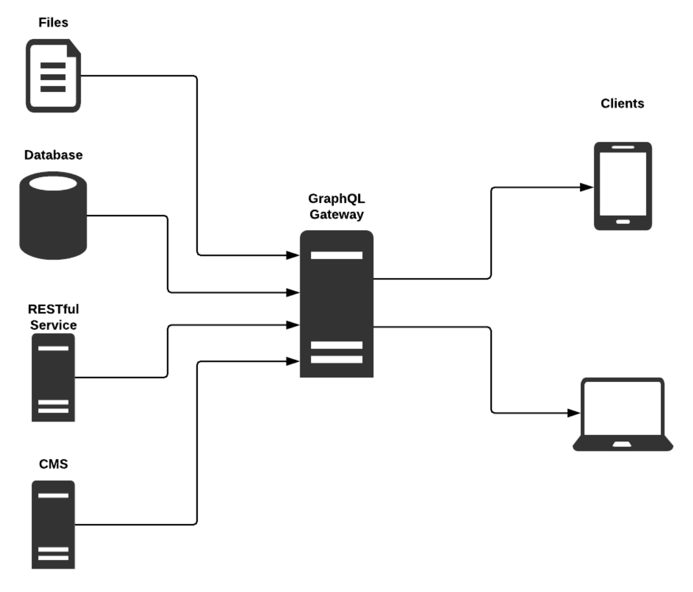
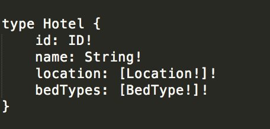
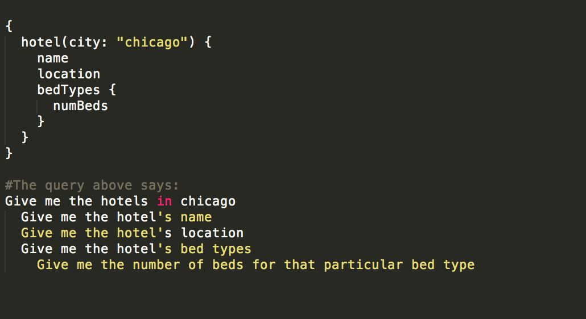

System design
APIs, REST
Graph QL
REST is one way of manipulating data managed by a remote service. It avoids direct coupling of remote procedures & minimizes the need for domain specific APIs. So, It’s an interesting architectural style when building a web service. Instead of asking for a particular behavior to be executed, with REST, you’re asking for a resource using standardized HTTP verbs. In addition, REST manages state transitions seamlessly analogous to that of how the web handles state transitions. Users navigating the web don’t have to type in the URI of every web page they visit. Instead, in most cases, transitioning from one page to another is done by clicking on links displayed on a page. State transition occurs in REST in a similar way with a principle known as HATEOS.
There are certain situations, however, where designing APIs in such a way is not ideal regardless of weather or not the web service is a REST service or more of a remote procedure call.
As web services evolve, usually one of two things will happen.The size and complexity of your response becomes bigger which means the payload of the API's response will get significantly bigger. Clients will have to accept the entire response even though they may only want a small subset of that information. One solution to this issue is to break this complex API into more granular ones. However, this adds more work for the clients of the API because clients will need to make multiple API calls to the web services to get all the bits of information they need. They will then have to combine each response in a way that suits them.
So an unnecessary amount of time might be spent for clients trying to orchestrate multiple API calls and combine the results. In a similar way, it is hard for the developers of the web service to know get a good sense of how their clients are using their APIs. Clients might only need roughly 10% of the response from one of your endpoints, however, it’s hard for the server side developer to get an accurate sense of how clients use the response. So with this type of API design, deprecation of existing fields is extremely difficult and the traditional approach is to resort to versioning APIs.
This is mostly where GraphQL comes in. It was initially developed at facebook and eventually open sourced. It aims to simplify a lot of the issues mentioned above in developing traditional web services. GraphQL represents an approach to access and query data from one or more sources with convenience for all parties involved. There are a number of GraphQL components involved to make this happen:

- The client of the GraphQL API
- The GraphQL layer or implementation
- The web services that act as source of data for the GraphQL layer
The first thing that is usually designed and implemented is the GraphQL schema. A GraphQL schema can look something like this:
Both the client and the server are in sync & statically bound to this schema via an API driven approach. This allows both the client and server to validate their messages to make sure they’re conforming to the schema. The graphQL layer uses this schema definition to generate what is known as an Object Graph. This just represents the relationships that different resource objects have based on the defined schema.
The GraphQL API can interface with different types of services, some of which might use HTTP to communicate with one another and others might use some sort of remote procedure call. So, the source of data for the GraphQL layer can be a number of things.
Once the GraphQL layer and the service are properly set up, the client writes ‘GraphQL queries’ which are subsequently validated and executed by the GraphQL layer or implementation. These queries are quite similar to JSON so it is easy to quickly start writing GraphQL queries. The GraphQL implementation then traverses the object graph & sends back a response to the client.
GraphQL queries come in different forms: there are queries that retrieve data, modify data(known as mutations) or subscribe to certain events(known as subscriptions). With subscriptions, clients subscribe to an event with a GraphQL query and receive payloads. These payloads represent the result of running the query against the event.
For example, clients might want answers to the following questions
- Get all hotels in a particular city and corresponding bedding information
- Get hotel information
To answer this questions, traditionally, one would have to either make multiple API calls to and somehow combine the results. GraphQL makes it easier by letting the client write the query that represents the above questions. Then the graphQL implementation will traverse the object graph based on the pre-defined GraphQL schema and provide a response.
The graphQL query for the first of the two questions might look something like this:
So clients will need to implement a GraphQL client which is responsible for initiating the execution of the graphQL query and also handle the result of the graphQL execution. And on the other end, server side implementation of GraphQL is necessary to ‘tie’ your web service to the schema. There are GraphQL liberaries in a number of languages that one can use to implement GraphQL on server side.
Integrating GraphQL into your stack has quite the list of benefits. In some cases, it can improve the system’s performance by consolidating multiple network calls into one GraphQL call. The GraphQL layer still has to make a similar number of calls to the backend service. However, in most cases, these set of services are usually in the same cluster or data center, so network communication among them isn’t as expensive. In addition, for some clients, the size of the payload would significantly be reduced. However, since a GraphQL query is only as fast as the slowest REST service call, not all clients may feel the performance improvements.
The biggest selling point of GraphQL has to be the convenience and flexibility it offers. The client of a GraphQL API doesn’t have to worry about orchestrating multiple API calls to back-end services or spend time to figure out how to filter, map, and process responses. Similarly, server-side developers gain flexibility in not only how they design their APIs, but also how they evolve and modify it going forward. They also gain detailed insights as to how clients use their APIs which makes deprecation of fields much easier.
It is important not to forget that GraphQL is still an API clients interact with so, it’s important to come up with ways to implement things such as monitoring, proper error handling and validation, ways of measuring success, logging, circuit breaker techniques for fault tolerance and so forth.
Measuring success rate of calls can be a bit tricky with GraphQL. With traditional APIs, one way to measure success rates is to track the number of 500 or 503 responses and compare that to the rate of 200 responses. GraphQL, however, represents partial success. It shouldn’t blow up if one part fails so tracking success rate is not as straightforward. GraphQL will return a 200 even if it didn’t manage to return any data. One way to measure success is to track the number of exceptions per query over a certain time window.
Query validation is also another important part of setting up a graphQL API. Deep and complex queries could affect the performance of your service and could potentially even be used with malicious intent. So it’s important to first reason what depth and complexity of queries mean to the domain your APIs are serving. This will help to set up proper protections such as setting thresholds for query depth and quantifying query complexity. Just like stored procedures, stored GraphQL operations can be created. These are simply pre-defined and validated queries that are persisted and can always be used to get data. They’ll be associated with a key and clients can use that key to execute the data without knowing the details of the query.
GraphQL definitely has a lot of benefits. But it is not without a few setbacks. For example, server utilization will usually increase since processing the complex object graph will require more processing. Also, since GraphQL resolvers(behaviors attached to graphQL types) run as isolated units, there is a potential for duplicate network requests for similar data to the backend service. GraphQL is also not ideal for use in every situation. It shines best at the edge of a stack. Services at that level are usually responsible for orchestrating and aggregating multiple API calls to several smaller back-end micro-services. It wouldn’t make much sense to integrate GraphQL to a small micro service with very few and simple APIs. So it’s always best to analyze the use case prior to implementation since it may not be the best fit. Usually, GraphQL and other APIs such as REST or gRPC can work hand in hand, and one is not intended to be a replacement for the other.